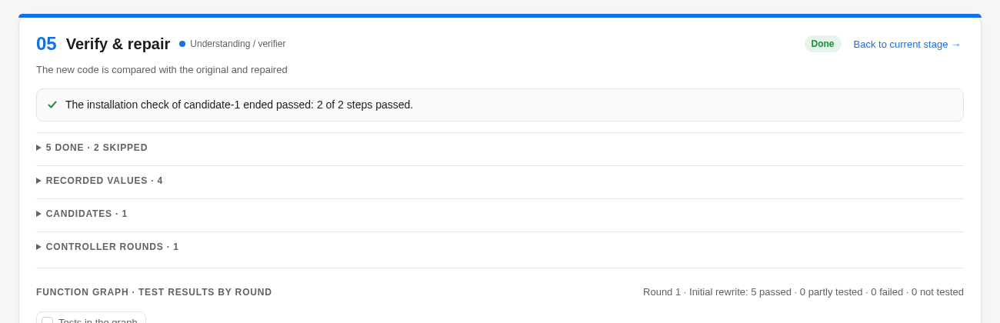
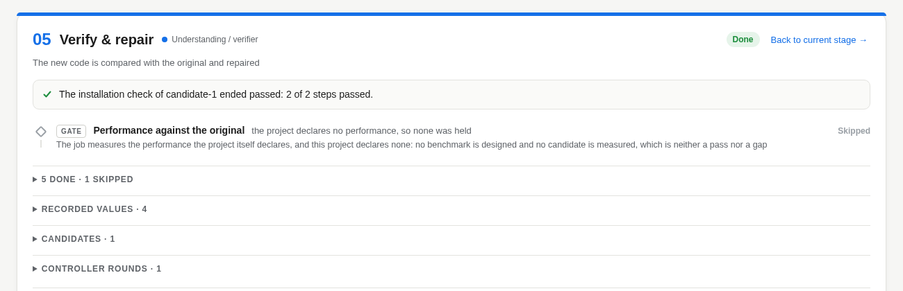
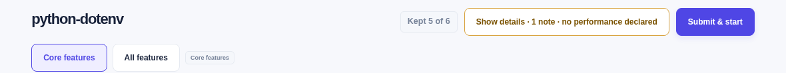
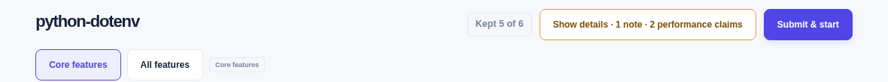
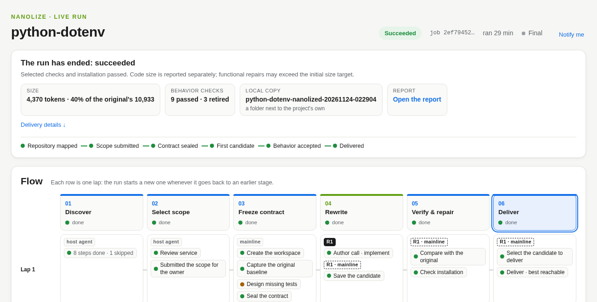
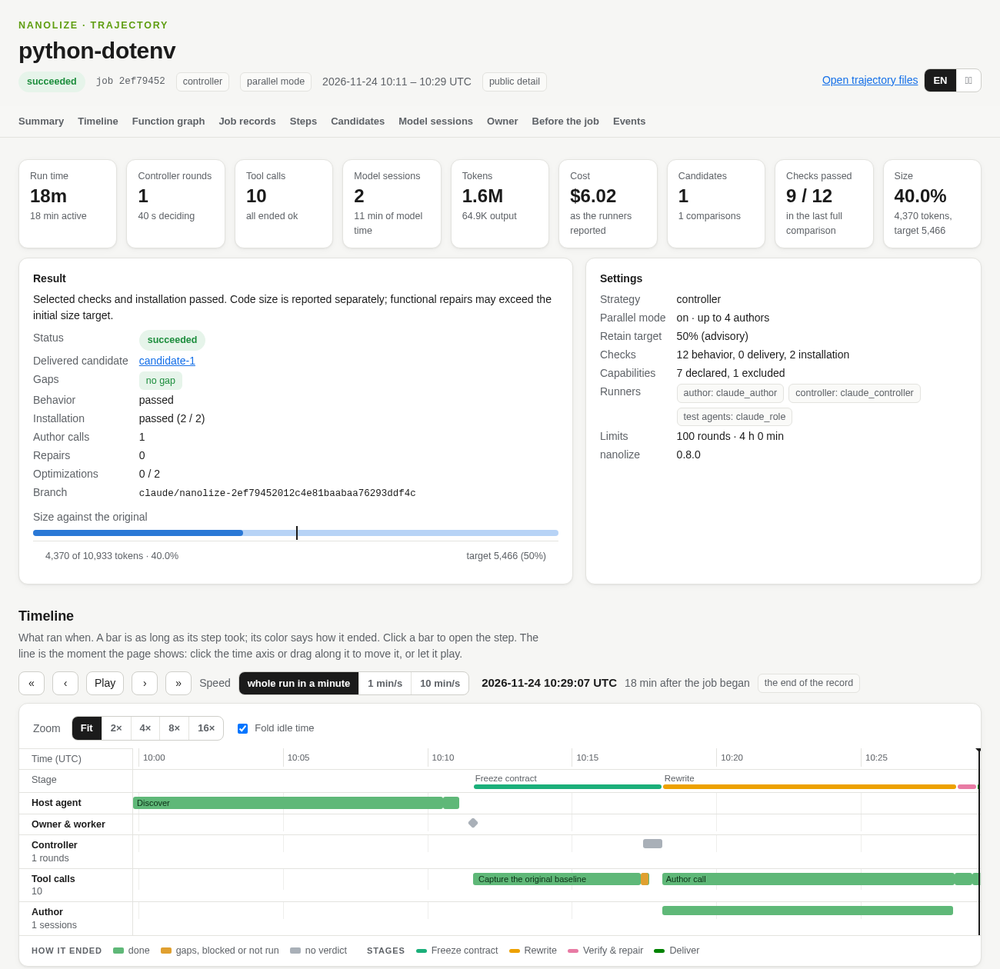

按合并方案执行完了。新分支从 main 的最新提交开出，把运行页改进和轨迹工具的分支合进来，再逐条修掉两条线碰到一起才显出来的问题。这一页记录四件事：整理出了哪些问题，改了什么、怎么改的，端到端验证的情况，以及改完之后的状态。
claude/run-page-on-main 从 main 开出，第一个提交是合并（main 是第一父提交），第二个是重录的基准记录，后面是修复，每个修复各带测试。PR #60 已标为可审，合入由你来按。分四组：合并时 Git 报出来的冲突；合并不报、但两条线碰到一起才显出来的问题（方案里列过的）；执行过程中由独立审查和真实运行新发现的问题；以及这次有意没有做、留到以后的。每一条都写了怎么处理的和落在哪个提交里。
| 问题 | 怎么处理的 | 提交 | |
|---|---|---|---|
| C1 | run-dashboard.js：分支把“交付是否成功”的条件搬进了新函数，PR #59 正好在旧位置加了一条规则（项目没声明性能时不把“性能保持”算作条件） | 取分支的结构，把 main 的规则写进新函数；导出列表取并集。main 自带的一条测试守着这条规则 | 02543dd0 |
| C2 | verification.py：两边都往“在私有副本里跑检查”的函数里加了参数和代码 | 两边都留：一个签名、一份文档字符串、main 的两个函数和分支的进度变量并排 | 02543dd0 |
| C3 | docs/run-page-demo.html：生成的演示页，两边各自刷新过 | 不手工解：取分支的版本，按合并后的资源重新生成 | 02543dd0 |
| C4 | docs/job-tools.md、docs/run-page.md：相邻的段落和同一张表的同两行 | 两边的文字都留；main 的两处补进分支重写过的表格行 | 02543dd0 |
| 问题 | 怎么处理的 | 提交 | |
|---|---|---|---|
| M1 | 公开级别的轨迹文件会带出 PR #59 放进作业结果里的性能声明原文：出处文件、行号、引用的句子、运行命令，还有 GPU 型号 | 公开级别对结果里的性能部分只留 main 自己的公开视图列出的字段，声明只留编号、能力、设备、状态、结论等 9 个键，不留 GPU 型号。用的是 main 已有的两个函数，没有另写一套 | 1a9f3f16 292e60f8 926e3607 |
| M2 | 三个演示页内嵌了运行页的脚本，脚本一变就过期，有测试会报 | 合并时重新生成一次；之后每次页面脚本变动再生成一次。四种开关对照页改成按时间线重建，顺带补上了分支自己漏掉的一个字段 | 02543dd0 d612b7fe 35bd3fdb 09a078f3 |
| M3 | 固定流程的基准记录过期：运行页多了一个指向交付报告的字段。CI 不跑这项比较，所以 CI 全绿也看不出来 | 在录制 main 那份记录的同一个环境里重录。和 main 的记录相比只多 27 行：9 个场景各一个字段 | eaef9eba |
| S1 | 嵌在第 02 阶段里的选择页默认只显示能力图，PR #59 放在“规划说明”里的性能声明列表被收起，按钮上没有提示，所有者提交前看不到这次要测哪几条 | 按钮上写出来：“Show details · 1 note · 5 performance claims”，没有声明时写“no performance declared”，并高亮。页面只读它已有的规划说明，服务端一行没动；一条测试把页面认的句子开头和后端实际写的句子绑在一起。skill 里的两句话对上 | 137c2b41 e42941b9 356f3955 a1ba0b75 |
| S2 | “项目没有声明性能”那句话在第 05、06 阶段里被折叠进“N done · M skipped”，默认状态下整个页面不说性能验收为什么什么都没做 | 这两个条目不折叠，单独显示在折叠行上面 | c78ad779 3e51bbf0 |
| S3 | 交付有缺口时，结束说明只看页面自己的条件列表，不读交付记录里的缺口。PR #59 新加的“环境准备失败”这种缺口没有对应条件，于是页面说“没有任何失败，只是安装检查没配置” | 结束说明以交付记录的缺口为准：只有全部缺口都是“未配置”才说没有失败，其余缺口按名字说出来；第 06 阶段的结论条目下面也列出这些缺口 | 880a2a26 5b598135 7105f00b a14b5ca9 da1d071d 9352094e |
| S4 | 被打断后重做的测试设计会接手已完成的会话，接手的记录用量是 0；轨迹把它们也算成模型会话，会话数翻倍，完整的成本被说成“下限” | 接手的记录不算会话，另外计数（“15 read, 4 taken over”） | 6d7deae8 d484c78a |
| 对照测试 | 你定的条件：分支对检查执行代码的那一处改动（比较步骤报告进度）可以进来，但要有一条测试证明开和不开进度报告时检查结果逐项相同 | 新的测试文件：同一批检查跑两遍，一遍不报进度、一遍报，结果逐项相同。覆盖单个工作进程、在副本里并行、在副本里失败后回到树里重跑、被挡住的检查、输入变了的检查、整个作业步骤、报告函数自己出错、计算节点答复、候选版本更长的时限 | f8f51061 90fa4b0b |
这些都不在方案里。前七条是独立审查查出来的，最后一条是真实运行里看到的。
| 问题 | 怎么处理的 | 提交 | |
|---|---|---|---|
| N1 | 比较步骤的进度记录会停在已经过去的阶段：检查已经从“副本里并行”转到“树里一条一条跑”，记录还写着“最多 3 条同时”，直到下一条检查结束。一条检查可能跑几分钟 | 阶段一转就立刻写一次记录。只对比较步骤的进度生效，基线捕获和测试设计的进度间隔和原来完全一样，有测试守着 | 6a047a43 |
| N2 | 公开级别的轨迹还会带出别的文字：作业事件的原话（有一条 main 的事件会列出文件名）、主持会话向运行页报告的文字、控制器每一轮“为什么还不能交付”的句子。而文档承诺公开级别“没有文件名” | 文字留着，把承诺改真：公开级别保留运行页本来就会显示给访问者的那些原话，从所有者记录里只取编号、枚举、计数和时间。文档、命令帮助都写明，并且命令在写出公开页面时打印一行提醒：分享之前先读一遍 | a7fc0ad4 df2a3c24 9b39b93b |
| N3 | M1 的修复引入的新问题：遇到别的程序写的、数字大到无法表示的性能记录，公开级别的录制会直接报错退出 | 这种记录当作“公开视图不认识的记录”处理：不带性能部分，录制继续，并在文件的来源说明里写一行 | 926e3607 |
| N4 | S1 的修复为了让页面脚本里能出现那两句话的开头，把 PR #59 的一条测试改窄了，改窄之后查不出“页面标记或脚本里多出一句性能提示”这类问题 | 恢复 PR #59 那两条断言的原样，只在比较之前把脚本里那唯一一处定义去掉 | 356f3955 |
| N5 | S1 的修复在 skill 里引用的按钮文字，在 skill 自己启动的评审里永远不会出现（那里总有一条“注意”排在前面），而且只写了复数 | skill 的句子改成和页面实际显示的一致 | a1ba0b75 |
| N6 | S3 的修复里，交付记录的缺口如果不是预期的形式（一个字符串、一个对象），又会被读成“没有缺口”，页面照样说“没有任何失败” | 凡是读不懂的形式一律不算“没有失败”，并单独说一句“有以页面读不出的形式记录的缺口”；名字太多时截到二十个 | 5b598135 a14b5ca9 9352094e |
| N7 | 对照测试第一版没有覆盖两条真实路径：计算节点给出答复、候选版本有更长的时限。审查构造了五种“进度代码改变结果”的改法，第一版测试一种都查不出 | 补上这两种情况，五种改法现在都会让测试失败 | 90fa4b0b |
| N8 | 第一次真实运行里基线捕获用了 1248 秒，PR #59 自己那次是 341 秒，看上去像合并拖慢了检查 | 查清不是：这次主持会话给测试检查定的超时是 600 秒（上次是 300 秒），python-dotenv 有一条等管道的测试在被“敲掉”时会一直挂到超时，600 秒正好超出第一遍敲除矩阵的时间，矩阵跑了两遍。这段代码在 PR #59、main 和合并后完全相同。第二次运行指定了 300 秒 | 不需要改代码 |
都不会让合并后的代码出错。前 8 条是方案里就列出的；后面是这次新看到的，其中标了“main 原有”的和合并无关。
| 什么 | 现在会怎样 | 来源 | |
|---|---|---|---|
| L1 | 被打断后重做的测试设计，会话在运行页的步骤下面列不出来，轨迹里也不带所属的叶子 | 页面退回到笼统的说法，不说错话 | 方案 |
| L2 | 两个值没有页面用语：状态词 not_declared、上限原因 design_not_run | 中文页面上显示成英文代码 | 方案 |
| L3 | 保存候选后作业自己做的“重新准备环境”被画成回到冻结阶段、新开一圈 | 流程图上多一圈 | 方案；main 原有 |
| L4 | 同一步在轨迹的步骤列表里排在所属那一轮之后 | 顺序看着不对，时间是对的 | 方案 |
| L5 | 因输出带路径而判“未验证”的检查，轨迹里算在“未通过”里，不说原因 | 比较通过了，轨迹却显示有未通过 | 方案 |
| L6 | 轨迹页没有性能验收的一行 | 只在事件的句子里能看到 | 方案 |
| L7 | 轨迹里不记录作业在等什么 | 只有状态 | 方案 |
| L8 | 被打断的调用没有结束时间 | 期间的会话不属于任何步骤 | 方案 |
| L9 | 作业被叫停时，如果另一个进程正长时间占着作业记录的锁，而某条检查的线程正在写进度，停止要等到锁放开 | 极少见；探测里是 21 秒对 3 秒。基线捕获的进度报告从分叉前就有同样的情况，这次合并让比较步骤也有了 | 审查；改它要动 main 所有步骤共用的写记录函数，所以没动 |
| L10 | “阶段一转就立刻写”没有自己的最小间隔 | 现在一批检查最多转三次，不会多写；以后如果有新的调用方在副本和树之间来回切，写的次数会跟着检查数走 | 审查 |
| L11 | 测试检查的超时如果不小于第一遍敲除矩阵的时间（小项目是 540 到 600 秒），而又有一条检查在被敲掉时挂住，矩阵会整遍重跑 | 基线捕获多花一个超时加一遍矩阵的时间 | 真实运行；main 原有 |
| L12 | python-dotenv 这类作业的功能图不列出任何测试（“10 checks over 0 tests”），并把一个内部名字当成基线里失败的测试挂在 8 条通过的检查下面 | 功能图上测试一栏不对。用 PR #59 自己的代码看它自己的那次运行，结果一样 | 真实运行；main 原有 |
| L13 | 几处小的：已停止的本地评审，状态命令答“不可用”；声明的句子以句号结尾时，规划说明里出现两个句号；四种开关对照页里手写的“成功”结果缺两个字段；真实运行演示页里“开了性能验收”的那次运行没有性能上限的设置 | 都是显示上的小毛病 | 定向检查和调查；前两条 main 原有，后两条是分支原有 |
做法按方案定下的来：从 main 的最新提交（25634d02）开新分支 claude/run-page-on-main，第一个提交把 claude/run-page-improvements 合进来，main 是第一父提交；之后每个修复是自己的提交，各带“没有这个修复就失败”的测试。原分支和 main 都没有动。
| 组 | 提交 | 内容 |
|---|---|---|
| 合并 | 02543dd0 | 在 main 上合入分支：10 处冲突，三个演示页按合并后的资源重新生成 |
eaef9eba | 固定流程的基准记录重录（多 9 个 report 字段） | |
| S1 选择页 | 137c2b41 | 嵌入的选择页按钮写出后面有几条性能声明；页面测试，加一条把页面认的句子开头和后端句子绑在一起的测试 |
e42941b9 | skill、README 和文档：声明在“Show details”后面 | |
356f3955 | 审查后：PR #59 的那条测试恢复原来的两条断言；规划说明不是列表时不出错；补两条测试 | |
a1ba0b75 | 审查后：skill 引用的按钮文字和页面实际显示的一致 | |
| 对照测试 | f8f51061 | 新测试文件：同一批检查开和不开进度报告，结果逐项相同 |
6a047a43 | 审查发现：进度记录会停在过去的阶段。阶段一转就写一次，其他步骤的进度间隔不变 | |
90fa4b0b | 审查后：测试补上计算节点答复和候选版本更长时限两种情况，以及计数的锁和节点提示的先后 | |
cd908fd1 f4b1ee07 | 慢测试表补四个新类；一处注释跟上代码 | |
| S2、S3 运行页 | c78ad779 | S2：“项目没有声明性能”的两个条目不折叠 |
880a2a26 | S3：结束说明读交付记录的缺口；新缺口有页面用语和中文 | |
3e51bbf0 5b598135 7105f00b | 第一轮审查后：S2 的测试也画控制器作业和中文页面；缺口的各种记录形式；第 06 阶段的结论条目列出没有对应条件的缺口；一条测试把页面的缺口用语和后端的缺口名字绑在一起 | |
a14b5ca9 da1d071d | 第二轮审查后：不是列表的缺口记录不再读成“没有”；名字太多时截到二十个；一个共用的“代码形式”常量 | |
9352094e | 第三轮审查后：截断数字的测试、读不懂那一行的英文措辞、两处注释 | |
| M1、S4 轨迹 | 1a9f3f16 | M1：公开级别不带性能声明的文字 |
6d7deae8 | S4：接手的会话不算模型会话 | |
292e60f8 a7fc0ad4 d484c78a | 第一轮审查后：性能部分改用 main 自己的公开视图；文档写明公开级别保留哪些原话；评审会话和收尾会话被接手的情况也有测试 | |
df2a3c24 | 写出公开页面时，命令打印一行“分享之前先读一遍” | |
926e3607 9b39b93b | 第二轮审查后：不认识的性能记录不再让录制报错；文档补上控制器每轮的句子，去掉说得过头的一句 | |
| 收尾 | 073a1dd4 | 最后一轮复查后：五处注释和文档的措辞，一条断言 |
| 演示页 | d612b7fe 35bd3fdb 09a078f3 | 页面脚本每变一次，三个演示页重新生成一次 |
这是你最在意的一点，所以在最终的分支上又逐个文件核对了一遍：PR #59 相对分叉点改了 111 个文件、25,369 行（增和删都算）。这些行在最终结果里原样还在的有 25,340 行；不是原样的 29 行，分布在 7 个文件里：
| 文件 | 行 | 为什么不是原样 |
|---|---|---|
run-dashboard.js | 8 | 冲突 C1 的 5 行（规则换了位置，导出列表并在一起）；S2 给两个条目各加一个“不折叠”标记；一处正则字面量换成共用的常量名 |
verification.py | 5 | 冲突 C2：同一行签名和文档字符串结尾里，两边的参数并在一起 |
docs/run-page.md | 4 | 冲突 C4：同一张表的两行，两边的文字都在 |
docs/run-page-demo.html | 8 | 生成的页面，内嵌的就是上面那个脚本 |
tests/test_performance_option.py | 2 | PR #59 的两条断言，断言的内容一字未变，只是比较的对象换成“去掉脚本里那一处定义之后的页面” |
README.md、skills/nanolize-run/SKILL.md | 各 1 | S1：PR #59 说“选择页列出声明”的那句话后面加了半句“在运行页里它们在 Show details 后面” |
分支本来就带着几处后端改动（比较步骤报告进度、回答问题的路由等，方案里逐项列过），它们随合并进来。除此之外，这次的修复往 main 已有的后端文件里加的东西只有一处：job_tools/freeze.py 里“阶段一转就写一次进度”的几行（见问题 N1）。PR #59 关于性能声明、冻结和检查执行器的代码，没有一行被改。
每个包交付之后，都由一个没有参与编写的子 agent 做找错式的审查：读说明、读交付记录、读改动，在自己的副本里把每条新测试对应的改动拿掉看测试会不会失败，再专门构造作者没想到的输入。审查查出的每一条，我都裁定“修”“不改”或“以后”，记在台账里发回作者；作者修完，再审修过的部分。上一个项目的教训是修复本身经常带来新问题，这次也一样：下面第四、五、七行里的问题，都是前一轮的修复引出来的。
| 审查 | 必须修 / 值得修 / 备注 | 最要紧的发现，和处理 |
|---|---|---|
| 合并后的检查执行代码 由写 PR #59 这部分代码的 agent 做 | 0 / 2 / 7 | 结论是“合并前没有必须修的”：进度代码不改变任何检查结果，合并对 verification.py 的解法是对的。两条值得修：进度记录会停在过去的阶段（修了，问题 N1）；停止作业时可能要等记录的锁（没改，见以后再做 L9） |
| S1 选择页 | 0 / 2 / 6 | PR #59 的一条测试被改窄了（恢复原样，问题 N4）；skill 引用的按钮文字在真实评审里不会出现（改了，问题 N5）。审查还在无界面浏览器里把真实评审页放进框架看过，按钮一行显示得下 |
| S2、S3 运行页，第一轮 | 0 / 2 / 8 | 八个条件对应的缺口名字里有六个没有测试守着，写错一个就会把同一个缺口说两遍；缺口列表里如果是对象而不是名字，会被读成空列表（问题 N6）；第 06 阶段的结论条目不提没有对应条件的缺口（一并修了） |
| S2、S3 运行页，第二轮 | 0 / 2 / 8 | 上一轮的修复只对“列表里的坏条目”严格，缺口字段本身不是列表时仍然读成“没有任何失败”（修了）；新规则里有五处没有测试守着（补了） |
| S2、S3 运行页，第三轮 | 0 / 1 / 6 | 逻辑在审查能构造的每种情况下都对（包括 6 万次随机画法对照另写的参照实现）；“还有 n 个”的数字没有测试守着（补了），一处英文措辞（改了） |
| M1、S4 轨迹，第一轮 | 1 / 3 / 8 | 唯一一条“必须修”：公开级别的轨迹在一次真实运行的记录上带出了项目的文件名，来源是 main 的一条事件，而文档承诺“没有文件名”（问题 N2，裁定见决定 D14）。主持会话的报告文字同理。审查还找到了一次真实的“重做的测试设计”，在上面验证了 S4：会话数从 15 变成 11 |
| M1、S4 轨迹，第二轮 | 0 / 3 / 5 | 上一轮的修复让公开录制在极端数字上报错退出（修了，问题 N3）；文档有一句说得过头，还有一类文字（控制器每轮的句子）没列出来（都改了） |
| 对照测试和进度记录的修复 | 0 / 3 / 7 | 进度代码和修复本身没找到错；但测试没有覆盖“计算节点给出答复”和“候选版本更长的时限”，审查构造的五种会改变结果的改法它都查不出（补了，问题 N7） |
| 最后一轮小改动的复查 | 0 / 0 / 7 | 四个包最后一批提交合在一起复查：没有必须修或值得修的。7 条备注是措辞和测试的边角，其中 5 条我直接改了，放在最后一个提交里 |
合计（不含最后一行）：1 条必须修、18 条值得修、55 条备注。18 条值得修里 17 条改了，1 条留到以后；55 条备注里 31 条引出了改动。每一条的裁定和结果都在工作目录的台账里。
按你说的用 python-dotenv 这样的小仓库快速验证。做了两次完整的真实运行，加上四项用真实记录做的定向检查。每次运行都是把某个提交打包成插件和运行时，由一个全新的主持会话在计算节点上无人值守地跑完全程（performance=on parallel=on scope=core，检查经调度器在计算节点上执行）；运行期间用分支新加的轨迹工具在一旁实时录制；结束后用运行自己的记录把运行页画出来，逐个阶段截图并读出页面上实际显示的文字。
| PR #59 自己的那次（对照） | 第一次：合并提交 | 第二次：最终代码 | |
|---|---|---|---|
| 代码 | PR #59 的中间提交 | eaef9eba（合并加基准记录，修复之前） | 9b39b93b（之后的提交只有页面措辞、测试和一处注释） |
| 结果 | 成功 | 成功 | 成功 |
| 提交到交付 | 15.8 分钟 | 33.0 分钟 | 18.0 分钟 |
| 基线捕获 | 341 秒 | 1248 秒（见下） | 345 秒 |
| 作者写实现 | 483 秒 | 636 秒 | 607 秒 |
| 和原版比较 | 25.6 秒，通过 | 12.7 秒，通过 | 31.7 秒，通过 |
| 安装检查 | 通过 | 通过，2 / 2 | 通过，2 / 2 |
| 性能验收 | 项目没有声明性能 | 项目没有声明性能 | 项目没有声明性能 |
| 体积 | 原版的 41.8% | 原版的 40.0% | |
| 轨迹实时录制 | 当时还没有这个工具 | 508 次，无报错 | 339 次，无报错 |
| 作业的模型用量 | 2 个会话，131 万 token，5.94 美元 | 2 个会话，163 万 token，6.02 美元 | |
| 主持会话的花费 | 9.4 美元 | 8.0 美元 | 10.7 美元 |
下面都是真实记录画出来的真实页面，不是示意图。页面用英文是因为这台机器的无界面浏览器没有中文字体；中文字符串由测试逐条守着。






| 定向检查（真实记录） | 修复之前 | 修复之后 |
|---|---|---|
| M1：PR #59 自己那次 detectron2 运行的记录，录成公开级别 | 5 条声明带着出处、原句、命令等 14 个键，还有 GPU 型号；文件里 17 处、页面里 34 处出现声明的文字 | 5 条声明只有编号、能力、设备、状态、是否比较、GPU 数、原因、结论；没有 GPU 型号；文件和页面里 0 处 |
| S4：PR #59 的一次 tqdm 运行，其中测试设计被打断后重做过 | 15 个会话，成本“不完整” | 11 个会话（另记“读到 15 份，其中 4 份是接手的”），成本完整；token 和时间不变 |
| S3：第一次运行真实的交付视图，手工往记录里加缺口 | “环境准备失败”加“安装检查未配置”：页面说“Nothing failed. Not checked, because nothing is configured for it: Installation check.” | 同样的记录：“Recorded by the delivery as a gap: Candidate preparation not passed.”；只有“安装检查未配置”时仍然是原来那句；缺口写成读不懂的形式时说“Something recorded in a form the page cannot read” |
| S1：python-dotenv 的真实计划上启动评审，把选择页放进框架里渲染（没有提交作业） | 按钮只数“注意”，不提性能 | 三种设置下按钮的文字都和设计一致，见上面两张图；单独打开的选择页没有按钮，一切照旧 |
端到端没有覆盖到的：有性能声明的项目用最终代码完整跑一遍（tqdm、detectron2 没有重跑，改为在 PR #59 留下的真实记录上检查）；有人值守的运行在浏览器里实际操作；页面上回答作业的问题；中文页面的截图。
| 项目 | 现在的状态 |
|---|---|
| 分支 | claude/run-page-on-main，从 main @ 25634d02 开出，在 main 上共 31 个提交（PR 页面上显示 37 个，多出的 6 个是合并带进来的原分支提交），最新是 073a1dd4。已推送 |
| PR | #60，目标 main，可以审了。没有合入：合入由你来按，建议和 PR #56、#57、#59 一样用合并提交 |
| CI | 最新提交 073a1dd4 上 13 项全过（两个 Python 版本各 6 片，加打包）。合并提交和中途的一个状态也各跑过一遍，都是 13 / 13 |
| JS 测试 | 401 / 401（合并提交时是 395 项，修复新增 6 项） |
| 整套 Python 测试（计算节点） | 5,939 项，1,331 个测试进程，其中 6 个进程共 7 项失败，都不是这次改动引起的：3 项是整作业测试在 16 个进程同时跑时超时，单独跑通过；4 项在这个环境里连 main 也同样不过 |
| 固定流程的基准比较 | 在录制它的环境里 53 项全过（CI 不跑这一项） |
| 生成文件 | 两个提示词文档的检查通过，不需要重新生成；三个演示页是按最终的页面脚本生成的 |
| main 的内容 | PR #59 的 25,369 行改动里，25,340 行原样还在；不是原样的 29 行见上面的表 |
| 原分支和 main | claude/run-page-improvements 和 main 都没有被改动。原分支的 6 个提交原样保留在合并提交的第二父提交一侧 |
nanolize trajectory record | site | show：把一次运行录成一个文件，生成可回放的页面。公开级别不带性能声明的文字；但会保留作业事件和主持会话报告的原话，其中可能有项目的文件名和调度分区名，所以分享之前要读一遍，命令自己也会提醒。执行过程中需要决定的事都由我定，这里逐条列出。前六条是你在方案页上定的。
| 决定 | 理由 | |
|---|---|---|
| 你定的 | 从 main 开新分支，把分支合进来；公开轨迹不带声明原文；四处修复放进同一个 PR；选择页在按钮上写出声明条数；比较步骤的进度改动带进来并加对照测试；由我执行，用 python-dotenv 做端到端检查 | 方案页 |
| D1 | 重录的基准记录不放在合并提交里，单独一个提交 | 它的差异（9 个字段）可以单独看 |
| D2 | 四种开关对照页按时间线重建，不只是刷新 | 它的画面缺分支最后一个提交加的字段；在分支上重建和在合并后重建结果相同 |
| D3、D4 | 修复分四个包，一个包只动一组文件；生成的演示页只由我统一重新生成 | 避免两个包改同一个文件，避免几千行的生成文件互相冲突 |
| D5、D6 | S1 只读页面已有的规划说明，不改服务端；没有声明时按钮写“no performance declared”，“每个叶子都测”的模式下按钮不变 | 不动 PR #59 的服务端代码；“什么都不会测”正是所有者提交前必须看到的那句 |
| D7、D9、D13、D16 | S3：只有全部记录的缺口都能由“未配置”解释时才说“没有失败”；其余缺口另起一句说出来；第 06 阶段的结论条目也列出它们；读不懂的记录形式一律不算“没有失败” | 页面不能对一份写着失败的交付说“没有任何失败” |
| D8、D17 | 先在合并提交上跑一次端到端，最终代码上再跑一次；第二次指定测试检查的超时为 300 秒 | 第一次用来确认合并后的流程本身，并留下修复之前的页面作对比；300 秒是 PR #59 那次用的值，避免敲除矩阵跑两遍 |
| D10 | 审查发现进度记录会停在过去的阶段：修，改在 main 的 freeze.py 里，三行，只对比较步骤的进度生效 | 这是分支新功能自己说错话，而且会错几分钟；别的步骤的进度间隔有测试守着不变 |
| D11、D12 | 审查发现停止作业时可能等记录的锁：这次不改；其余备注不改 | main 的基线捕获从分叉前就有同样的情况；改它要动 main 所有步骤共用的写记录函数 |
| D14、D15 | 公开轨迹里来自公开记录的原话（作业事件、主持会话的报告、控制器每轮的句子）保留，把文档的承诺改真；写出公开页面时命令打印一行提醒 | 这些原话就是运行页显示给访问者的内容，也是轨迹页的叙事（一次真实运行的 46 条事件里 25 条只有文字）；从源头改事件要动 main |
没有删除任何运行的记录、任何分支或任何别人的文件。
工作目录里留着：状态日志、决定清单、审查台账、每个包的说明和交付记录、九份审查报告、两次运行的全部记录和截图、这一页的源文件。